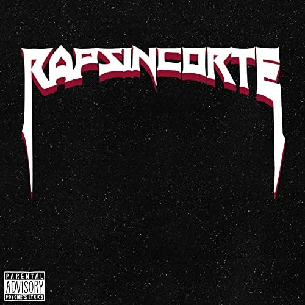
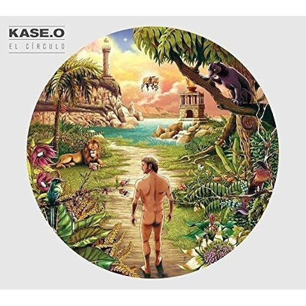
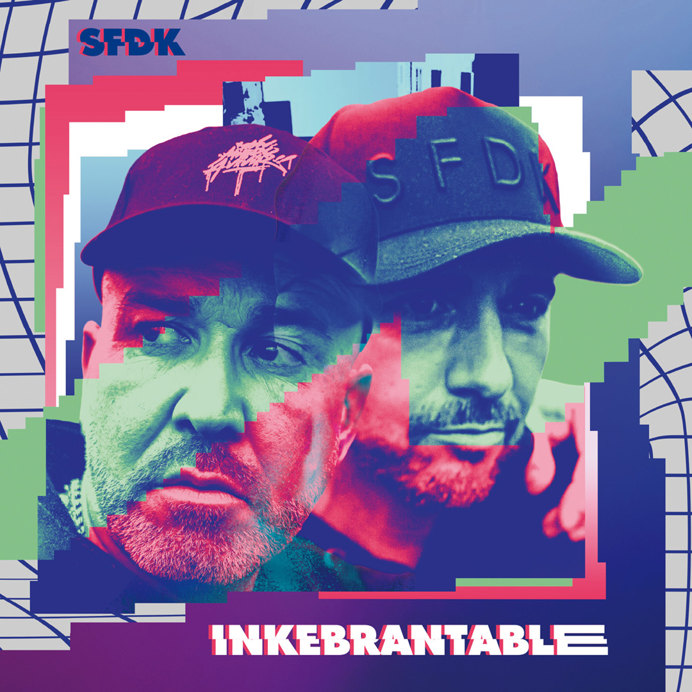
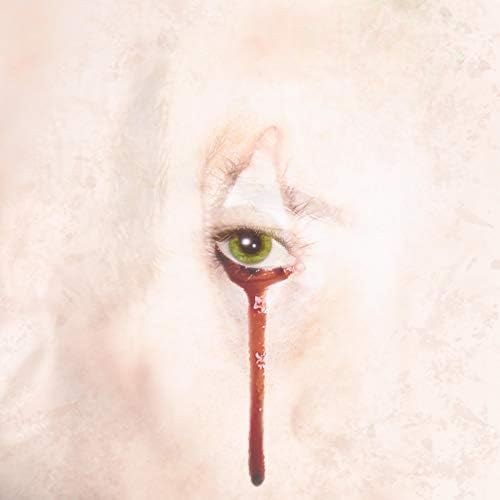

El disco Rap sin corte el cual recoge los trabajos del artista "Foyone" durante 10 años culmina con una entrega especial, RapSinCorte L donde participan distintos artistas como de Kase-O, Elio Toffana, Ptazeta, Ayax, Spok Sponha, Cráneo, Bejo, Easy-s, Moneo, Fernandocosta, Laura Bonsai de Las Ninyas del Corro, Dollar Sellmoundi, Prok, Sofia Gabanna, Toteking, Felina Vallejo de LNDC y Recycled J.
25.99€
Añadir al carrito

KASE.O saca al mercado su última superproducción musical titulada "El Círculo". El boceto se ha convertido en un paisaje fantástico y ultra-colorido. Ayudado en la producción y mezcla por Gonzalo Lasheras y RdeRumba, el rapero maño nos revela también su faceta como músico, produciendo él mismo más de la mitad de los temas.
30.99€
Añadir al carrito

Inkebrantable, el nuevo disco de SFDK, de las leyendas sevillanas del RAP español. Con colaboraciones como Bejo, Kaze, Lia Kali, Sara Socas
20.43€
Añadir al carrito

Tras algún tiempo sin lanzar un nuevo álbum, Kaze regresa pleno auge del COVID-19 con un EP de cinco canciones titulado Broken. Lanzado en mayo de 2020 inicialmente solo en Spotify, el disco sirve al rapero cartagenero para desahogarse de varios problemas personales y profesionales que tuvo que enfrentar en los últimos tiempos
23.50€
Añadir al carrito

Asentado en el top 3 de Discos en España un mes después de su lanzamiento, "Me muevo con Dios" suena como el disco definitivo de Cruz Cafuné. Definido en sus propias notas de prensa como «mitad crooner, mitad rapero», el tinerfeño lleva poniendo la música de las islas en el mapa desde que lanzara sus primeros singles en 2015
17.44€
Añadir al carrito

Space Hammu es un colectivo de hip hop nacional integrado por Carrion, Delaossa, Easy-S, J.Moods, Kas Rules, Raggio, Sanson y Saske. Tas tanto tiempo de espera nos deleitan con un disco de 10 canciones titulado "Hammu Nation"
29,99€
Añadir al carrito